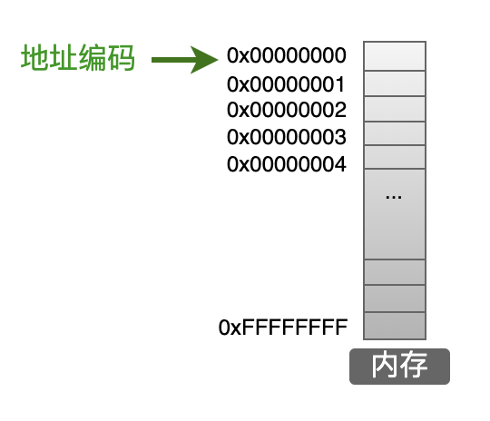
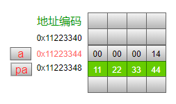

从指针来理解程序的执行
概述
- Q1 地址，数组，指针？
- Q2 万物皆指针？
- Q3 一个程序里，指针到底是？
- 总结
Q1：地址，数组，指针
address array pointer
不那么官方的解释：
首先是地址
地址就是在
空间（内存） 上所占的一块位置的开头。
地址只是地址头，是页码编号，无法决定分配的内存。
（操作系统才是国家分配内存的那位大人)
地址和内存遥相呼应。
地址标记了内存的某一个位置，像极了箭头。
然后是数组（数组大家应该很熟悉了。）
数组无非是一组相同类型的数据的集合的类型
有趣但容易
#include <stdio.h>
int main() {
int x[2] = {114, 514};
printf("x[0]:%d,x[1]:%d", 0 [x], 1 [x]);
return 0;
}
！！！这玩意能编译运行？
确实能，那问题来了，为什么能？
终于是指针
计算机的世界里，没有黑魔法
那些看起来
这段代码可以解释为什么implicit_conversionb
看得很清楚，x[1]和1[x]的地址一样
这说明他们俩
站在同一个地方，自然是同一个数据。
这是由于c语言的隐式转换导致的。
这个地方的x数组被
所以来看看指针
别急，我们回到地址这边，利用地址来理解指针。
很简单的一块内存分布。地址编号就是家庭地址（经纬度更恰当）

一段简单的实例代码
#include <stdio.h>
int main() {
int a = 20;
int *pa;
pa = &a;
printf("通过pa提供的地址，找到a=%d\n", *pa);
}

没什么特别的，指针也是变量，指针也需要内存来存放
指针就是存放地址编号的变量
思考 ：指针只是编号的话，那为什么指针要声明类型？
指针可以歪着指
指针需要记录地址编号的开头，这我们很清楚。
我们自然而然得想到，指针是否需要知道地址编号的结尾。
如果指针知道它指向的变量有多大（内存）
那它也就知道了结尾（做个加法罢了）
那什么叫指针可以歪着指？
还是看代码
// 紧接上文
++pa;
printf("通过pa提供的地址，找到a下面的数据=%d\n", *pa);
现在我们就知道了，前面那个看起来有点奇怪的黑魔法是什么了
Q2：万物皆指针？
我们已经知道指针是什么了
那么很显然，所有的变量，都可以被指针找到，然后读取/修改
会指针的C语言大佬恐怖如斯
 但是，细细想来，真的所有东西都可以被指针访问修改吗？
但是，细细想来，真的所有东西都可以被指针访问修改吗？
想想那个奇怪的代码，
我们在对x[2]赋值的时候，程序发生了什么？
操作系统貌似在吃干饭。
我们貌似不能对x[2]赋值，操作系统拒绝了这个赋值？
真的是这样吗？ gdb 调试一下？
调试过后，我们可以看到，操作系统没有拒绝这个写入。
只不过在退出程序的时候，它报错了。
*** stack smashing detected ***: terminated
[1] xxxx IOT instruction (core dumped) ./a.out
有没有办法绕过这个报错？
当然是：提前终止程序就好了
是的，c语言就是这么简单易懂，不需要ptrace改写变量值，
更不需要其他syscall指令
事实上在程序结尾加上while(1);也可以 做到类似的效果
c语言没有限制我们对内存的一些
这意味着什么？
操作系统，认真吃饭！
我们可以做一些
指针真正的Power！
Q3：一个程序里，指针到底是？
是否可以指向函数？代码片段？
指针的Power！ 我的王之力！
我要用指针使用！main函数！(狂)
通过函数指针，可以写了一个十分通用的
callback模型
这样就可以很方便地使用回调函数了

我们还能做什么？我们现在知道了，函数也可以用指针访问。
我们接着就要问了，
到底能不能？
如能。
我要修改函数！
这会不会很危险？
[1] xxxx segmentation fault (core dumped) ./a.out
我的王之力！
为什么会报错？操作系统拒绝了这个赋值。突然矜持
这个时候应该意识到，不是所有的内存都能读写(当然还有执行)
我们能不能知道，哪些是可读的？那些是可写的？
这是很自然的需求
操作系统真没吃干饭
有需求就有
# Linux下使用pmap查看
pmap $pid
我们可以看到一个进程分配的空间。
以及它的地址啊，读写权限。
都是操作系统提供的帮助。
当然，Linux下你是可以
万物皆文件（虚拟化，持久化）
我们也许需要更多信息
# 直接看maps
cat /proc/$pid/maps
是的，我们可以看到进程的内存是如何分布的。
指针是内存的指针
有没有方法
好了，先别想这么多。因为，这都是很危险的操作。
一不小心，程序就boom了
所以谨慎地使用指针吧。
现在介绍，最简单的，指针开辟空间方法。
malloc 和 free
看代码（安全的代码）
思考：我们能不能用数组开辟？
这个操作是不是真的安全，有没有隐患？
会怎么样？
ptr开辟的空间怎么办？
如果有个程序反复开辟空间，不free，我们的电脑会怎么样？
是的，会
Boom的代码（需要sudo的Boom）
指针差不多就这么多内容（
总结
奇怪的知识增加了

Q1 地址，数组，指针？
- 地址在计算机中就类似书的页码，行列。
- 数组是一组同类型的数据的集合的变量类型。
- 指针是存储地址的变量类型。
就像 int 不是 float 一样
所以指针就是变量类型罢了。
Q2 万物皆指针？
计算机里，万物都需要内存来存储，
指针能不能访问那块内存得看操作系统。
指针：我成跪着要饭的了。

还得看操作系统的脸色。
Q3 一个程序里，指针到底是？
指针只不过是，通过寻址，然后间接进行读写执行的一种手段。
1024级指针：当然这是没必要的
使用指针时要谨慎。
（被指针善待）
以上